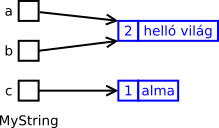

Hanoi tornyai
Adott az alábbi forráskód, amely a Hanoi tornyai feladványt oldja meg:
#include <iostream>
void hanoi(int n, char honnan, char seged, char hova) {
if (n == 0)
return;
hanoi(n-1, honnan, hova, seged);
std::cout << "rakj 1-et: " << honnan << "->" << hova << std::endl;
hanoi(n-1, seged, honnan, hova);
}
int main() {
hanoi(4, 'A', 'B', 'C');
return 0;
}Hogy lehet megoldani azt, hogy minden lépés mellé ki legyen írva annak sorszáma? Pl. 3 korongra így:
1. lepes: rakj 1-et: A->C 2. lepes: rakj 1-et: A->B 3. lepes: rakj 1-et: C->B 4. lepes: rakj 1-et: A->C 5. lepes: rakj 1-et: B->A 6. lepes: rakj 1-et: B->C 7. lepes: rakj 1-et: A->C
Mutass minél többféle, egymástól eltérő elvű megoldást! (A rekurzió maradjon meg.) Mi a megoldásokban a közös?
Figyelj arra, hogy az elkészített függvények használatának módja – lényegében a fejléce – ugyanaz legyen, mint az eredeti függvényé (korongok száma, oszlop1, oszlop2, oszlop3)! Ez persze nem jelenti azt, hogy nem írhatsz segédfüggvényeket ettől eltérő paraméterezéssel. Ne csinálj tárolót, nincs rá szükség: a függvény olyan sorrendben állítja elő a lépéseket, ahogy a kimenetre is azoknak kerülniük kell. A tároló kapcsán amúgy is meg kellene oldanod egy olyan problémát, ami anélkül is felmerül, és a feladat lényege.
A kifejezésfa okos pointerrel és egyszerűsítéssel
A kifejezések az előadáson bemutatott kódban egyszerűsíteni
is tudták magukat. Pl.
valami+0 = valami, konstans+konstans = konstans és hasonló
minták felismerésével. Az összeadás osztálynál ez így nézett ki:
virtual Expression * simplify() const override {
Expression * lhs_simpl = lhs_->simplify();
Expression * rhs_simpl = rhs_->simplify();
Constant * lhs_cons = dynamic_cast<Constant *>(lhs_simpl);
Constant * rhs_cons = dynamic_cast<Constant *>(rhs_simpl);
if (lhs_cons != nullptr && lhs_cons->get_value() == 0.0) { /* 0 + a = a */
delete lhs_simpl; /* = 0 */
return rhs_simpl;
}
if (rhs_cons != nullptr && rhs_cons->get_value() == 0.0) { /* a + 0 = a */
delete rhs_simpl; /* = 0 */
return lhs_simpl;
}
if (lhs_cons != nullptr && rhs_cons != nullptr) { /* c + c = c */
double new_value = lhs_cons->get_value() + rhs_cons->get_value();
delete lhs_simpl;
delete rhs_simpl;
return new Constant{new_value};
}
return new Sum{lhs_simpl, rhs_simpl};
}Láthatóan elég nagy gondot okozott a kézi memóriakezelés: ha valamelyik egyszerűsített
részkifejezésre nem volt szükség (pl. mert 0 értékű), akkor explicite törölni kellett azt
a delete operátorral.
Építsd be a labor feladatában elkészített programodba az egyszerűsítést! A konstans és a
változó nem egyszerűsíthető (önmagát adja), az összeg és a szorzat viszont igen.
Az std::shared_ptr-ekhez van egy dynamic_pointer_cast()
segédfüggvény is a <memory> fejlécfájlban:
dynamic_pointer_cast<X>(p) ugyanazt csinálja okos pointerekre,
mint amit a dynamic_cast<X*>(p) nyers pointerekre.
A szorzat egyszerűsítése:
virtual Expression * simplify() const override {
Expression * lhs_simpl = lhs_->simplify();
Expression * rhs_simpl = rhs_->simplify();
Constant * lhs_cons = dynamic_cast<Constant *>(lhs_simpl);
Constant * rhs_cons = dynamic_cast<Constant *>(rhs_simpl);
if (lhs_cons != nullptr && lhs_cons->get_value() == 0.0) { /* 0 * a = 0 */
delete rhs_simpl;
return lhs_simpl; /* = 0 */
}
if (rhs_cons != nullptr && rhs_cons->get_value() == 0.0) { /* a * 0 = a */
delete lhs_simpl;
return rhs_simpl; /* = 0 */
}
if (lhs_cons != nullptr && lhs_cons->get_value() == 1.0) { /* 1 * a = a */
delete lhs_simpl; /* = 1 */
return rhs_simpl;
}
if (rhs_cons != nullptr && rhs_cons->get_value() == 1.0) { /* a * 1 = a */
delete rhs_simpl; /* = 1 */
return lhs_simpl;
}
if (lhs_cons != nullptr && rhs_cons != nullptr) { /* c * c = c */
double new_value = lhs_cons->get_value() * rhs_cons->get_value();
delete lhs_simpl;
delete rhs_simpl;
return new Constant{new_value};
}
return new Product{lhs_simpl, rhs_simpl};
}Megoldás
A teljes megoldás: expression_shared_simplify.cpp.
SmartPtr fordítási hiba
Adott az alábbi intruzív okos pointer megvalósítás.
#include <iostream>
template <typename T>
class SmartPtr;
class RefCntd {
int counter = 0;
template <typename T> friend class SmartPtr;
};
template <typename T>
class SmartPtr {
T* pobj;
public:
explicit SmartPtr(T* pobj = nullptr)
: pobj(pobj)
{
if (pobj)
++pobj->RefCntd::counter;
}
SmartPtr(SmartPtr const &) = delete; /* lusta */
SmartPtr& operator=(SmartPtr const &) = delete; /* lusta */
~SmartPtr() {
if (pobj)
if (--pobj->RefCntd::counter == 0)
delete pobj;
}
};
class X : public RefCntd {
public:
X() {
std::cout << "Hello\n";
}
~X() {
std::cout << "Bye\n";
}
};
int main() {
SmartPtr<X const> ptr(new X);
}A kód nem fordul. Miért? Egyáltalán kellene fordulnia, vagy koncepcionálisan is hibás? Ha érdemes javítani, akkor hogyan, és miért jogos az a javítás?
Megoldás
A probléma az, hogy a főprogramban az X const példányosítás miatt a SmartPtr
adattagja X const * típusú lesz, és ezért a --pobj->RefCntd::counter kifejezés
konstans változót próbálna módosítani.
A legjobb megoldás az, ha a referenciaszámlálót mutable adattaggá változtatjuk:
class RefCntd {
int mutable counter = 0;
/* ... */
};A mutable jelző azt mondja, hogy az objektum const volta nem kell érvényes legyen az adattagra.
Jelen esetben ez jogos, mert a referenciaszámláló ugyan technikailag része az objektumnak, de igazából cska metaadat.
Polimorf típus
Tudjuk, hogy heterogén kollekcióhoz szükségünk van egy indirekcióra az
objektumok eltérő típusa és mérete miatt. Ez kényelmetlen, mert a plusz indirekció és az ismeretlen típus is nehézkessé teszi az
objektumok érték szerinti kezelését. A másolás megoldható egy clone() segédfüggvénnyel, amit virtuális konstruktorként emlegetünk, még ha valójában nem is konstruktor. Az érték szerint
kezeléshez pedig az előadáson készítettünk egy segédosztályt, amely
másoláskor az objektum clone() függvényét hívja:
template <typename BASE>
class PolymorphicValue {
private:
BASE *ptr_;
public:
explicit PolymorphicValue(BASE *ptr = nullptr): ptr_{ptr} {}
~PolymorphicValue() {
delete ptr_;
}
PolymorphicValue(PolymorphicValue const & masik) {
if (masik.ptr_ != nullptr)
ptr_ = masik.ptr->clone(); // itt a lényeg
else
ptr_ = nullptr;
}
/* ... */
};Ezzel persze egy új elvárásunk van a tartalmazni kívánt típus felé: legyen clone() függvénye:
class Shape {
public:
virtual Shape * clone() const = 0;
/* ... */
};
class Triangle: public Shape { /* ... */ };
class Rectangle: public Shape { /* ... */ };
PolymorphicValue<Shape> s1(new Rectangle);
PolymorphicValue<Shape> s2 = s1; // p1.ptr_->clone()Erre azért van szükség, mert a PolymorphicValue osztály konstruktora Shape * paramétert kap, és nem
ismeri a lemásolandó objektum típusát. Az intruzív megvalósítás azonban nem előnyös: A PolymorphicValue feladata, a
memóriakezelés egy része bekerült a Shape osztályba és annak leszármazottaiba.
Viszont ha más megközelítéssel indulnánk neki a feladat megoldásának, ismerhetné a típust. Ha sablon lenne a
PolymorphicValue konstruktora, akkor átvehetné érték szerint is az objektumot, amelyet tartalmazni kell, és ismert
lenne a típusa is:
PolymorphicValueV2<Shape> s1( Rectangle{} ); // template-es ctor
PolymorphicValueV2<Shape> s2( Triangle{} );
PolymorphicValueV2<Shape> s3 = s1; // Rectangle copy ctor, Triangle copy ctor
PolymorphicValueV2<Shape> s4 = s1;
s3->get_area(); // Shape* és Shape&
(*s3).get_area();Oldd meg, hogy ez így működjön! Ehhez szükséged lesz egy type erasure-re is,
amiről előadáson esett szó. Ha mindent jól csinálsz, a clone() függvény törölhető lesz; a
PolymorphicValueV2 osztályod közvetlenül a tartalmazott objektum másoló konstruktorát fogja használni, és semmilyen
egyéb függvényt nem vár annak interfészén.
Ezek a feladatok az első nagy házit egészítik ki. A jelzett feladatok plusz pontért adhatóak be.
Plusz pontért beadható: Helyettesítő objektum az indexeléshez
Tekintsük a következő kódrészletet:
MyString a = "hello";
MyString b = a;
std::cout << b[1]; /* e */
a[1] = 'a';
b[1] = b[4];
std::cout << a << " " << b; /* hallo hollo */Ebben a másolat objektumot megindexeljük, ami hatására meghívódik az indexelő operátora. De a két indexelő közül (konstans és
nem konstans) a nem konstans fog meghívódni, mivel a b objektumnak nincs const minősítője. Ez pedig
sajnos különválasztja a két sztringet, pedig nem is módosul a b értéke az első kiírásnál. A probléma az, hogy az
indexelés pillanatában még nem tudjuk, hogy a következő művelet egy írás vagy egy olvasás lesz, úgyhogy igazából az indexelő
operátor még nem tudja eldönteni, hogy külön kell-e választani a két sztringet (copy-on-write) vagy nem.
A helyzetet úgy tudod megoldani, ha egy helyettesítő (proxy) objektumot használsz. Az indexelő operátornak nem egy karakter referenciájával kell visszatérnie, hanem egy olyan objektummal, amely a sztring megindexelt karakterét reprezentálja. Ez az objektum tudja, hogy melyik sztring melyik karakteréről szól. Az írás és az olvasás a helyettesítő objektumon már külön műveletnek fog látszani. Lehet olyan értékadó operátort írni neki, amely karaktert vesz át (erre ő a kapott karaktert beleírja a hivatkozott sztringbe, esetleg közben szétválasztja a sztringeket), és kaphat olyan konverziós operátort is, amely ezt karakterré alakítja – értelemszerűen ilyenkor kiolvasva a hivatkozott sztring hivatkozott karakterét.
Ha végeztél, ellenőrizd, hogy nem vétettél-e OOP tervezési hibát. A proxy objektumnak nem dolga dinamikus tömbökkel bíbelődni.
Egyetlen feladata, hogy az írást és az olvasást megkülönböztesse; a tényleges memóriaműveleteket már a MyString
osztálynak kell elvégeznie. Ha nem ilyen lett a kódod, refaktoráld!
Plusz pontért beadható: egyformán inicializált sztringek
Adott az alábbi kódrészlet:
MyString a = "helló világ";
MyString b = "helló világ";Az eddigi kódváltozatban ez nem egy, hanem két tömböt hoz létre – tehát a memóriában kétszer van benne ugyanaz a tömb. Ez a redundancia elkerülhető, ha a létrehozáskor a sztringek mindig megnézik, hogy létezik-e már ugyanolyan tartalmú szöveg, mint amilyen értéket fel kell venniük. Ha igen, akkor elég csak azt meghivatkozni. Ehhez azonban ismerni kell az összes szöveg objektumot. Valamilyen módon, például egy láncolt listában (vagy jobb ötlet: keresőfában) nyilvántartást kell vezetni arról, hogy milyen szöveg objektumok léteznek. A feladat ezt implementálni; ehhez használhatsz STL tárolót is.
Kivételkezelés
Vizsgáld meg exception safety szempontból, és ha kell, javítsd a MyString osztályodat! Valósítsd meg az
összes sztringműveletet úgy, hogy erős garanciát, atomi működést biztosítsanak!
Sehol nem szabad olyannak történnie, ha bármelyik memóriafoglalás (new vagy malloc) hibát jelez, akkor
a sztring objektum megsérül, az abban tárolt adat elveszik, vagy memóriaszivárgás keleketkezik.
Az indirekciók számának csökkentése
Az alapértelmezett megvalósítás szerint a MyString objektumokhoz tartozó StringValue objektumokat
dinamikusan foglaljuk. Így oldható meg, hogy azok száma független lehessen a MyString objektumok számától.
A hivatkozott karaktertömböket pedig szintén dinamikusan kell foglalnunk, mert azoknak pedig a mérete lehet eltérő.
Ezt mutatja a következő ábra, ahol a kékkel színezett dobozok a dinamikusan foglalt területeket jelzik.
Mindez nem túl hatékony. A foglaláshoz kétszer kell a new operátort használnunk. Egy adott karakter eléréséhez
pedig két indirekción kell keresztülmennünk; az elsővel még csak a StringValue objektumhoz jutunk, amelyből
egy újabb pointer kiolvasása és dereferálása árán kapjuk csak meg a karaktert.
A feladat ezen indirekciók számát csökkenteni. Ez a referenciaszámláló, az esetlegesen eltárolt sztringméret és a karakterlánc egy memóriaterületre helyezésével oldható meg. Mindez azt is jelenti, hogy az ehhez lefoglalt terület méretét a szöveg méretének figyelembe vételével kell kiszámítani:
A MyString objektumokban eltárolt pointerek így különböző méretű memóriaterületekre mutatnak, amelyek
már érték szerint tartalmaznak minden adatot.